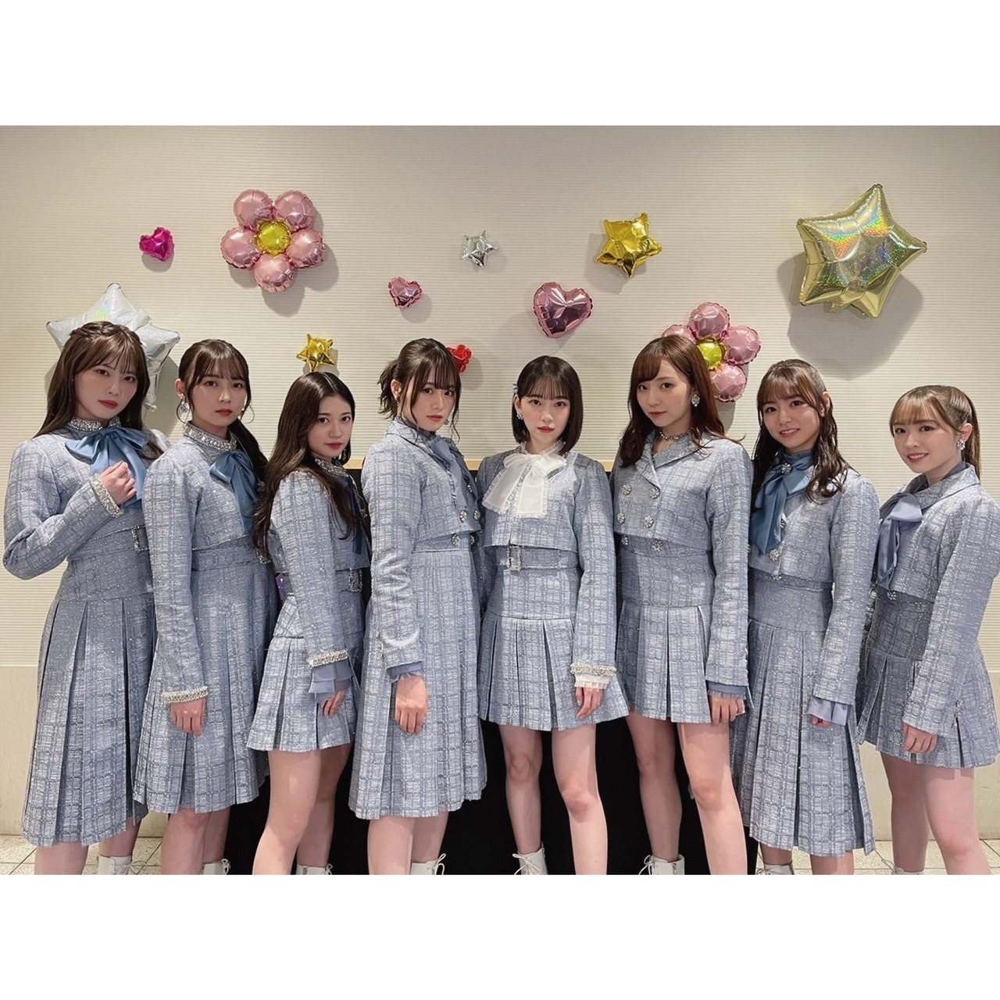
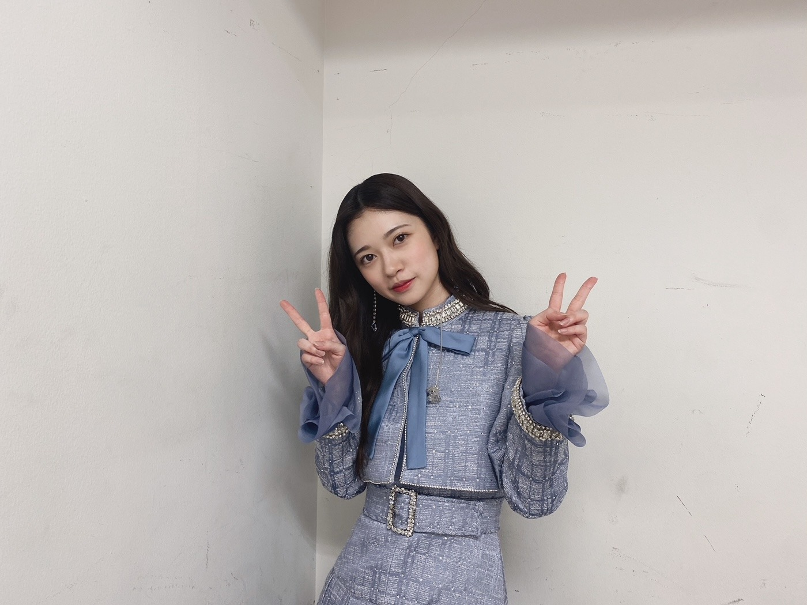

2021/0404SunLIVEの話など、、、！
乃木坂46に色を添えれた事
嬉しく思うことが増えてきました。
昔は不安の方が大きすぎたり
がむしゃらに歩むことしか出来なくて
何があってるのか
何が正解なのか
答えのない世界を皆んなで
手探りの日々でした。
自分達の辿った道をふと振り返った時に
一つ一つの行動や出来事
何気ない言葉や仕草も
全て一つでも変わっていたら
今の乃木坂46は無かったと思うと
乃木坂46の一人として
歩んで来れたことを
凄く誇りに思う日々です。
きっと更に歩んで
また、振り返った時に
今いる場所にも感じる事があるんだろうと思うと
日々大切にしているつもりではありましたが
もっと大切にしようと思えます。☺️✨
短くてもLIVE前にブログあげたかったのですが
少しでもみおなのいる楽屋を楽しんでいたら
LIVE直前にまとまらなくて
結果しっかり気持ちを
まとめてブログ更新させてもらいました。
当日は準備にも追われていたので
写真もちゃんと撮りたかったのに、、、
あまり写真がございません、、、

乃木中みて頂けましたか。
みていただければ分かると思うのですが
2期生って凄く凄く仲良しです。☺️✨
あの空気感独特と思われる人もいるかもしれませんが
何故か思わず笑ってしまう
何かと面白い人の集まりだったのです。
テレビでなかなか
披露する機会がなかったと思います。
ライブや作品になる私達はいつも何故か笑顔でいるよりも凛々しい顔をしてる姿をお見せすることが多く
でも、私達は昔からずーっとこんな感じです。
じゅんなのツッコミも昔からあのクオリティーで
乃木中のひな壇で隣になると
独り言のように皆んなに突っ込んでます。
日々の訓練が生きてます、、、
2期生あれがいつものクオリティーです。
そんな個性が輝いているのも
今までの経験が元から持っていた個性を
最大限に引き出してくれているのかなーと
とにかく、スタジオでみてくれたメンバーや
スタッフさんやバナナマンのお二人も凄く
楽しんでくれていて
2期生皆んな幸せな気持ちになりました。☺️✨
また、乃木坂46全体でもロケしたいですね。✨
私には日村賞があるのですが、、、
どんどん日村賞を取った時にスタジオに居た
メンバーが居なくて寂しい気持ちにもなります。
日村賞精算もお願い致しますよー。✨
歌番組や生配信
LIVEなど色々と本当にありがとうございましたな
ここ数日間でした。
そして、みおなとの最後を色々と共に
出来て何より嬉しかったです。
そして、乃木恋のイベントも
心からありがとうございました。
イベント会場に流れているBGMが
私の大切にしている楽曲ばかりで
愛を感じました、、、✨
久々に近くでファンの人を見て安心しました。
近くで会うのはお久しぶりすぎて
緊張もしたのですが
とても、楽しい空間でした。
体調には皆さんも気をつけて
また、LIVEだったりオンラインのイベントでも
仲良くして下さい。✨


コメント(1167)
感謝､感激､二期生LOVE
これからも頑張って行こう
2期生ライブ素敵だったよー！乃木中も面白かった！！
蘭世は可愛すぎるー！！大好きだーー！！
2期ライブ最高に良かったよ！
最後泣いちゃったし！
それにその後の乃木中でやっぱ2期っていいなって思えた！
あと、昨日のイベントめっちゃ楽しかったよ！
久しぶりに生で蘭世見れてよかった！
2期生ライブありがとうございました！
未央奈の卒コンもありましたが、
今までのライブの中で一番好きと言っても過言ではないライブでした！
最後に全員で歌ったアナスターシャ
絶対忘れません！
その後の乃木坂工事中でも2期生大活躍で
過去一笑いました。
やっぱり2期生の絆の強さには
脱帽するばかりです。
いつもありがとう
ユースケ
2期生ライブは本当に涙腺崩壊してました！
未央奈ちゃんとの繋がりを考えてると涙が自然と出てきました！
未央奈も本当にお疲れ様！！
乃木中見たよ！！
SOCIALDISTANCE隊長！！蘭世！！面白かった！笑
蘭世！ブログ更新ありがとう！！！
たくさん話したいことあるけど、まず2期生のお誕生日おめでとう(^^)
今年もまたお祝いできて嬉しい！！！
これからも変わらず応援させてください〜♡
そして2期生ライブお疲れ様！！！(^^)
最初のアナスターシャから最後のアナスターシャまでずっと泣いてたし改めて蘭世のいる乃木坂の2期生が大好きだなって思った。
ライブの全部一瞬一瞬があいらの好きな乃木坂で、尊すぎて儚すぎて愛おしすぎて改めて大好きだなって思わせてもらいました。
いつもありがとう。
これに尽きます、、、。
どんな蘭世も好きだけど、やっぱりあいらは踊ったり歌ってる蘭世を見るのがどーしよーもなく好きで幸せです。
2期だけの空気幸せすぎました。
いつも幸せと笑顔をありがとう。！！！
これからも末長くよろしくお願いします。！
体調には気をつけてね！
だーーーーいすき！！！届け！伝われ〜♡
あいら
2期生LIVE見てたよー！泣いた！！
けどそれ以上に沢山笑った！！2期の雰囲気大好き
サイコキネシスとかボーダーとか
昔の曲も大事にしてくれてるのが嬉しく思う。
バタバタの中メールもこまめにありがとう
あいらぶゆー！！！
ブログ更新ありがとう！
日村賞精算ね！
自分も楽しみにしてます！
それでは！
いつもありがとう！
応援してます！
2期ちゃんライブもアフター配信も
乃木坂工事中も全部観ましたよ！
2期ちゃんの全部が詰まっていましたね。
素敵なライブを本当にありがとう。
これからも蘭世ちゃんの事応援してるよ！
2期ちゃん大好きです！そしてサンエト大好きだ〜
昨日の乃木恋リアイベ本当に参加出来て良かったです。
ホワイトボードに書いたコメント、何回か読んでくれてもう嬉しすぎてその時間の大切さをめっちゃ感じました
次会えるのはいつになるか分からないけど、その時まで何卒！
体調気をつけてください！
誇りです
(^o^)
2期生ライブは最高でした！
円盤化して欲しいです！
これからも蘭世に会えるようにがんばります！
蘭世も体調に気をつけて頑張ってください！
2期生みんな最高だし 大好きよ〜♡
乃木坂46て本当素敵で最強なグループだよ
俺はグループが存在する限りずっと応援していくと思うよ！！
蘭世もまだまだたくさん思い出作っていってくれたら何よりよ。例え卒業の日が来たとしても、蘭世についていくよ(*´ー`*)
幸せで元気でいてくれればそれでいいんだ♪
とてもとても楽しくて幸せな時間でした
いつもたくさんの幸せをありがとう
これからと楽しみにしてます
体調に気を向けて頑張ってください(^^)
ＬＩＶＥお疲れ様でした～＾＾
しっかり見させてもらいました。
８人しかいなかった分いつもより
しっかり蘭世ちゃんを感じることが
出来ました。
乃木坂工事中も久しぶりに笑いながら
見させてもらいました。
ＬＩＶＥでも乃木中でも披露してましたが
「サイコキネシスの可能性」もう
あのダンスの印象がついてしまいました。
こちらこそ仲良くしてください＾＾
2期生ライブお疲れ様です!!
乃木坂工事中観ましたが、本当に2期生の皆が
楽しそうにご飯食べたり、カラオケしてる姿に
とても癒やされました!!
蘭世ちゃんこれからも体調に気をつけて活動
頑張って下さい!。
2期生ライブお疲れ様！
しっかり未央奈ちゃん送り出せたね！
最高のライブだったよ！
今後のブログも楽しみに待ってるよ！
体調には気をつけてね！
応援してるよ！
大好きだよ♡
乃木坂工事中も観たよ〜！！
2期生愛はやっぱり凄いね！！
ライブも乃木中も最高でした！！
二期生がやっぱり好きです！
これからも応援しますね！
乃木中も見ましたよ〜！！！二期生ハウスすごい良かったです！！やっぱり二期生ってめちゃくちゃ仲良いんだなぁって思いましたwそれとやっぱりちょっと二期生ってみんな変だなぁって思いながら見ましたー！！wちゃんとソーシャルディスタンスリーダーしてて可愛かったし、テンション上げてくやつでも、普段あんまり大きい声出さない蘭世が大きい声出しててびっくりしました！wスタジオでもみんな楽しそうでラケットリレーでミスしちゃった蘭世も可愛かったです！w多分20回くらい見たと思います！w本当におもしろかったです！w
乃木坂お試し中も見ましたよー！！1ヶ月待ってやっと二回目の放送が見れてとても面白かったです！！w特にパネル出てきてぎょいーん。は流石に笑いましたし、食リポのフリの時に噛んでしまったとことかビリビリペン多分大丈夫です！多分です！wとか言ってるのも可愛かったです！wまた次回が楽しみです〜！！楽しみにしてます！w
この前のShowroomは仕事でちょっとしか見れなかったのが残念です。また次出る時はしっかり見ます！！w乃木恋のオンラインイベントにも参加できなかったので次蘭世にいつ会えるかわからないけど楽しみに待ってます！！長くなってしまいました…。読んでくれてありがとう！！！これからも体調に気をつけて頑張ってください！！
2期生ライブ、お疲れ様でした。
ミーグリの時にもお話したけど私はかなり涙腺が弱いのでずっと泣いちゃいました笑
でもその何倍も楽しく笑顔に元気になれました！
本当にありがとう。2期生ちゃんみんな大好きです！
蘭世ちゃんを、2期生ちゃんみんなをこれからもずっと見守っています。
また元気に楽しくおはなしが出来ますように。
明日からも一緒にがんばろうね。
蘭世ちゃん大好きです。またね:-)
短いブログでも、長いでもブログでもこうして蘭世先生が更新してくださることで僕はとても嬉しいです！
ありがとうございます。
*☼*―――――*☼*―――――*☼*
2期ハウス、とても素敵でした！
それぞれの個性がしっかり出ていて沢山笑いました。
そうですよ！まだ蘭世先生に日村賞残ってますね！！
精算ロケあるといいですね！
歌番組はもちろん、2期生ライブも拝見させて頂きました。
とても盛り上がりましたし、とても感動しました！
円盤化されますように。
今日も更新して下さりありがとうございます！
モバメありがとうございます！
広島住みの璃音
2期生ライブめっちゃ良かったで
日村賞精算はマジでやって欲しい…
2期生って凄く凄く仲良しです。」
もちろん、伝わってるよ！！
2期生って笑いのツボが小学生並みだよね
これ、自分なりの褒め言葉だよ。
2期生が1番大好き
2期生の笑いの絶えない空間が大好きすぎて、愛おしい
でも、ライブでは涙涙の連続だったね
未央奈ちゃんはもちろん、全員の想いに泣いてしまった
なんて素敵なグループなんだろう。
本当に乃木坂に出会えてよかったし、その中でも特に2期生大好き！！
これからも陰ながら応援するね。
乃木坂工事中の2期生企画最高！
未央奈ちゃんがとっさにマスク外して、歌いに行くところ面白い
蘭世ちゃんは「ソーシャルディスタンス隊長」、そういう気遣いができるのが、本当にすごいよ。
2期生ってとにかく最高だよ！！
2期生には個性があるってことを乃木中や2期生ライブを通して改めて実感しました！！
ちなみにこの1週間毎日2回は前回の乃木中見てます☺︎
未央奈を含めてこれからも2期生をずっと応援してます！！
全員の個性が見事に集約されていて最高過ぎます。
純奈さんのツッコミとみり愛ちゃんのダンスは個人的にツボでした。
ライブで号泣したあとの放送だったのでとても素敵で泣き笑いでした。
お疲れ様でした＆ありがとうございました。
2期生ライブお疲れ様でした！
未央奈の卒業コンサートも兼ねてということでしたが蘭世さんも言ってる通り二期生それぞれの個性が生かされて、一人一人のパフォーマンスがよく見えてとても楽しかったです！
全員センター企画で蘭世さんが選んだ『ボーダー』
心の底からこの曲が好きだし蘭世さんも言ってた通り卒御するまでずっと歌い続けてほしいな！！
その後の乃木中もすごく良かった！
暇さえあれば見てます！ほんとだよ？
日村さんも言ってたけどずっと見ていたいなーて！ぜひ円盤化を!!www
ロケいいね！
コロナでロケできないもんね！
また2期生でロケとか？！
想像するだけで楽しいですw泊まりがけのロケとかも！！
こちらこそ仲良くしてください！
蘭世さん大好きだよ！！
2期生ライブしっかり見ましたよ！
未央奈さんとの最後のライブすごく感動して思わず涙を流してしまいました。
蘭世さんのセンター曲、ボーダーを聴けて嬉しかったです！
もちろんどの曲も良かったけどアナスターシャとゆっくりと咲く花はすごく感動しました。
ライブ中は蘭世さんの笑顔がすごく印象的でした！
未央奈さんの卒業ライブだったけど必死に涙こらえて笑顔で送り出そうとしてるのだなと感じて蘭世さんらしいなって思いました！
その後の乃木中も見ましたよ！
2期生ハウス、すごく楽しかったです！2期生の皆さんの仲の良さが余すことなく見ることができて本当によかったです！
もう無条件に応援したくなります
がむしゃら、という言葉が大好きで、言ってあげられる機会があると、とても嬉しいです
その言葉が似合うのは、やっぱり若いうち、段々それだけでは許してくれなくなっちゃいます
2期生ライブ、
らしい姿をみんなが見せてくれて嬉しかったです
これからも頑張ってくださいね
ライブもお疲れさまでした。
乃木中も見ましたがやっぱり二期生みんなの雰囲気好きだなって改めて思いました(^^)
工事中での2期生ハウスのロケ面白かったわ
メンバーそれぞれの個性を最大限に引き出してた神回やった
みんな仲良しで息ピッタリな場面もあって結束力は硬いとホントに思った！
また2期生にちなんだロケやって欲しい！
２期生ライブお疲れ様です(*^▽^*)
凄く良かったし、未央奈の卒コンも兼ねてたから
めっちゃ感動しちゃったヾ(;ﾟ;Д;ﾟ;)ﾉﾞ
もちろん乃木中見たよ！
本当に２期生って仲良しだね♪
見ててほっこりするよ(*^▽^*)
まいちゅんには当たり強いよね(笑)
それもまた面白かった！
蘭世はこれから、ソーシャルディスタンス隊長だね(笑)
これからもたくさん２期生が活躍しますように＼(^o^)／
ライブ最高でござった。
二期生ライブ感動しました！蘭世のボーダーよかったよ！！
これからもソーシャルディスタンス隊長こと寺田蘭世さんについて行きます！！
コメントする